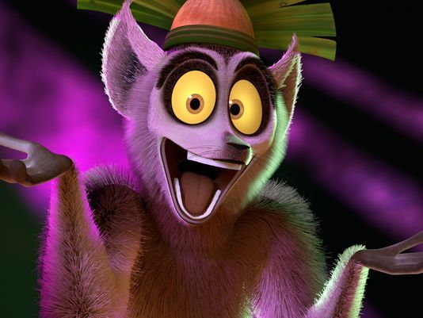

De 2015 à 2018 : Etudes de biologie et biochimie. J'ai obtenu une licence spécialité génétique et biologie moléculaire en 2017, et j'étudie maintenant l'informatique appliquée à la biologie.
De 2012 à 2015 : Etudes d'ingéniérie pendant lesquelles j'ai particulièrement appris les maths et la physique.
2012 : Baccalauréat Scientifique.
Expérience professionnelle
Stage
Stage encore
Stage toujours
Et un autre truc
Compétences
Informatique
Programmation : Python 3, Matlab, Java, R.
Analyse de données en R.
UNIX Bash.
HTML 5 et CSS 3.
Langues
Anglais : Fluide, niveau C1.
Allemand : Notions, niveau A2.
Miara RAKOTOMAVO

Etudes
De 2015 à 2018 : Etudes de biologie et biochimie. J'ai obtenu une licence spécialité Biologie Informatique et biologie moléculaire en 2017, et j'étudie maintenant l'informatique appliquée à la biologie.
2014 : Baccalauréat Scientifique spécialité Science de la vie et de la terre.
Compétences
Informatique
Programmation : Python 3, Matlab, Programmation en C, R, SQL.